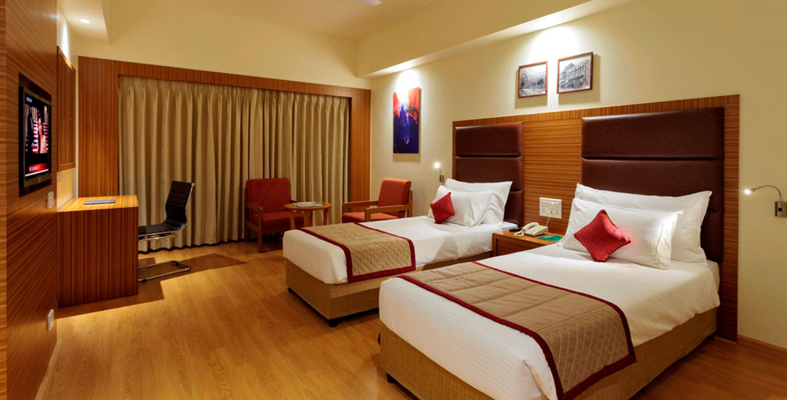
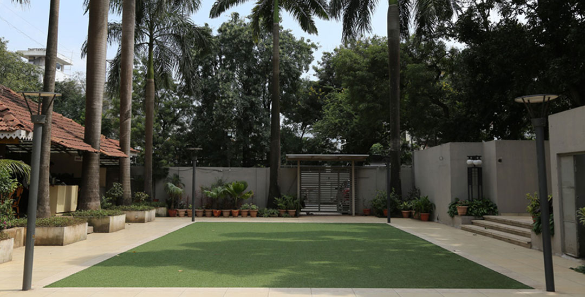
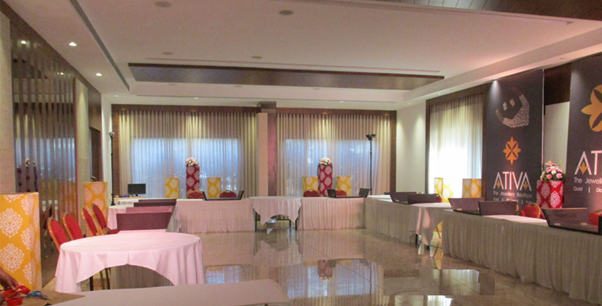

517 A/2, Shivaji Park, Kolhapur-416001,
Maharashtra, India.
Email : reservation@hotelpanchshilkolhapur.com
Phone : +91 231 2537517 / 2537518, +91 231 2537322
Website: www.hotelpanchshilkolhapur.com
Hotel Panchshil at Kolhapur, Maharashtra, has the advantage of being located in the epicentre of the city. It stands a stone throw away from the main bus terminus, close to railway station and 15 minutes from airport.
Hotel Panchshil invites you with it's beautiful and spacious entrance lobby. A team of welcoming lobby assistants, an affordable tariff which is sure to save you precious time running around to compare with other hotels. There are fourty eight fully air conditioned rooms each with exquisitely designed interior with modern bathrooms.



Established in 1991 by the Chordia Group Hotel Panchshil has a long- standing tradition of good service, warm hospitality and the wherewithal to convert a simple overnight stay into a relaxed sojourn of repeated experiences. Newly refurbished, the Hotel offers comforts and conveniences worthy of an elegant business and personal lifestyle.
With convenient access, a dazzling range of amenities & services, high security and safety coupled with a promise of serenity, little wonder then that Hotel Panchshil is the preferred destination of businessmen, pilgrims, tourists and local residents alike.
We provide the service & you play host at your own gala events in the newly extended lawn Adjoining the Bagicha Restaurant is a lush green lawn space which is ideal for hosting exclusive parties, banquets.This lawn sizing 3000 square feets & maximum serving capacity upto 150 guests.
Conference, Meetings are an opportunity to connect with colleagues and explore new ideas. When you hold your meetings at Hotel Panchshil,Kolhapur, we help to avoid any distractions, so your group can focus on the business at hand for an effective and successful session.The Conference Room has a floor area of 2000+500 sq.ft,classroom type Seating capacity of 150 persons.Designed with the meeting planner in mind, our personalized services make it effortless to provide a memorable experience for each and every invitee.